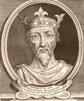
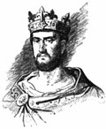
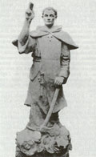
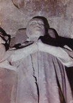

главная  статьи и тексты
статьи и тексты  Граф Рауль III «Великий»…
Граф Рауль III «Великий»…
главная |

Личность в историикраткая энциклопедияПроект «Личность в истории» посвящен людям — современникам грандиозных исторических событий, носителям редких качеств или людям, взгляды которых опередили их время. |
|||||
Коротко |
Статьи |
Персоналии |
Литература |
||
Граф Рауль III «Великий» де Крепи де ВалуаБаженова А. А. Династия графов Валуа-Крепи-Амьен-Вексен относится к младшей ветви династии Королингов (от Людовика I Благочестивого), существовала с X по начало XIII вв. Графство в разное время занимало территорию нынешних департаментов Франции: Уаза, Сомма, Эна (провинция Пикардия). Одним из ярких представителей этого рода был граф Рауль «Великий» де Крепи де Валуа. По одной хронологии он носил имя Рауля III де Крепи, по другой — Рауля IV. Рауль, граф де Крепи де Валуа, родился в Вексене, предположительно в 1010 году, в семье Рауля II (III), графа дю Вексен, Крепи и Валуа (ок. 980–1037) и Адельгайд де Бретёй де Нантёй Ле Одуэн де Клермон (980–1051). Был старшим ребёнком в семье и унаследовал в 1037 году имение отца — графство Валуа (Valois). Его младший брат Тибо получил графство Нантёй (Nanteil) впридачу с донжоном Крепи (donjon de Crèpy) и небольшими фьефами в долине реки Осень (l’Automne). Тибо, который являлся родоначальником сеньоров де Нантёй, оставался в тени, тогда как личность его брата Рауля ярко высветилась на сцене феодализма середины XI века. Рауль, не удовлетворённый наследством, намеревался играть главные роли. Он занимался расширением территории графства (позже похожую политику будет проводить король Филипп I Капет, что положит начало централизации французских земель), славился воинской доблестью и богатством, был смелым, умным и грозным военачальником, лидером и бесподобным тактиком. ??спользовал врожденное чувство войны, чтобы осаждать крепости, которые, как он считал, должны были быть ему возвращены по праву. Город, осаждённый Раулем — это всегда взятый город. Никто ему не сопротивлялся. Даже Мондидье и Перонна, известные своими неприступными укреплениями. Взятие Перонны вызвало такое уважение к его воинским качествам, что впоследствии его звали не иначе как Рауль де Перонн. Он также захватил силой и беззаконием город Мондидье, что стоило ему отлучения от церкви. Эти города граф де Крепи обложил ежегодной данью. Жители приняли его условия, благодаря чему он ушёл, великодушно согласившись сохранить им жизнь. Беда городу, который «забывал» о выплате дани. К примеру, в 1066 году Теодорик, епископ Вердена, отказался выплатить требуемые 20 ливров. Рауль немедленно выехал из Крепи (столица графства Валуа) со своей армией, разорил графство Верден, осадил город и сжёг его. |
|||||
|
При всём при этом, граф де Крепи де Валуа был верным вассалом королю Генриху I Капету. Он защищал королевскую власть, когда ей угрожали. Но то была лояльность, более мотивированная политической своевременностью, чем искренней самоотверженностью. Рауль со временем стал одной из выдающихся фигур двора. При нем графство Валуа имело самые обширные за всю историю границы. Земельное богатство составляло силу семейств. Оно доставляло им слуг, друзей и воинов. Оно давало независимость, оно позволяло повелевать. ?? граф Рауль это очень хорошо понимал. Он вновь соединил в своих руках три крупных владения — графства Амьен, Валуа и Вексен, а также со временем добавил к ним еще четыре — Витри, Бар-сюр-Об, Мондидье и Перонну. Это был последний взлет династии дома Амьен-Валуа. Примечательно также то, что крестьянские волнения в графстве начались только после смерти графа (после 1074 года). Рауль де Крепи де Валуа был женат на Адели, дочери графа Ношера (ок. 1015–1053), которая принесла ему владения Витри и Бар-сюр-Об и родила пятерых детей (по одной из версий — четверых): Готье и Симона, Аликс, Элеонору и Хильдебранду. Когда в 1053 году его жена Адель умерла, граф снова женился на некоей Хакенезе Алиеноре Брабантской (ок. 1022 — после 1063), которая, по всей вероятности, происходила из семьи могущественных графов Шампани, что также принесло Раулю несколько территориальных преимуществ. |
 Король |
||||
Но самую большую известность принёс графу де Крепи де Валуа брак в 1062 году с вдовой короля Генриха I Капета Анной Ярославной (ок. 1024 — ок. 1076), великой княгиней Киевской и королевой Франции, которая стала ему третьей женой. Рауль не побоялся отлучения от церкви и слухов при дворе, ведь для того, чтобы жениться на королеве, ему потребовалось развестись с Хакенезой, которая не преминула поехать в Рим и пожаловаться папе на беззаконие со стороны супруга. Сын Анны, король Филипп I, поначалу тоже отнёсшийся к этому браку более чем прохладно, в конце-концов смирился и принял графа Рауля при дворе. Хронисты отмечали, что король даже называл его отчимом (beau-pere). При Рауле де Крепи де Валуа объединились род Валуа и род Вермандуа: старшая его дочь, Хильдебранда Адела де Крепи вышла замуж за Герберта IV графа Вермандуа. Это тем более важно, что оба рода из династии Каролингов (род Вермандуа был старшей ветвью потомков Карла Великого). ?? позже, но ещё при графе Рауле, род Валуа-Вермандуа слился с родом Капетингов (ок. 1072–73 гг.): дочь Адели де Крепи и Герберта IV де Вермандуа — Адель де Вермандуа (внучка графа) — вышла замуж за Гуго Капета, сына Анны Ярославны и короля Франции Генриха I. Надо заметить, что этот самый Гуго Капет, ставший после женитьбы графом Гуго I де Вермандуа, был героем первого Крестового похода, предводителем рыцарей Севера Франции. 8 сентября 1074 года в Мондидье скончался Рауль III «Великий» граф де Крепи де Валуа де Витри д’Амьен дю Вексен де Перонн де Шомон де Мант де Мондидье, сеньор Бар-сюр-Об. |
Анна Ярославна, королева Франции. Король Франции Филипп I Капет. |
||||
Наследником стал младший сын Рауля Симон, граф де Мант д’Амьен де Валуа де Мондидье де Бар-сюр-Об де Витри и дю Вексен (ок. 1045/46–30.09.1082, Рим). Он воспитывался при дворе Вильгельма Завоевателя, так как Матильда, супруга Вильгельма, приходилась родственницей Симону. С 1072 года он владел как граф графствами Крепи, Вексен, Амьен и Бар-сюр-Об, защищая независимость земель от короля Филиппа I. С детства предназначенный для церкви, новый граф ничем не напоминал своего отца — блестящего военачальника и тонкого политика, честолюбивого правителя и отважного воина. Он и не должен был наследовать графу Раулю, но в 1063 году старший брат Симона — Готье III, граф де Крепи де Бар-сюр-Об — погиб в бою, попав в засаду. Через три года после смерти отца, в 1077 году, Симон уходит в монастырь Сен-Кентин (позже названный Сен-Клод). ??звестно, что Симон де Валуа де Крепи был канонизирован. День его почитания 5 октября. После ухода в монастырь, а позднее и смерти Симона в 1077–1082 гг. король Франции присоединил к своему домену часть графства Валуа (Компьень) и практически всё графство Вексен-Понтуаз и Мант, сославшись на то, что графство Вексен является фьефом аббатства Сен-Дени. Таким образом, королевский домен стал доходить до течения р. Эпт, которая сделалась теперь франко-нормандской границей. ?? это уже совсем другая история. |
 Симон де Крепи. |
||||
Граф Рауль де Крепи де Валуа, блестящий воин и политик, нашёл покой в церкви Сен-Пьер в городке Мондидье провинции Пикардия, где его гробница находится и поныне. Потомки рода Крепи-Валуа до сих пор живут в Англии, во Франции же род прекратил своё существование в 1213 году, потому что на свет не появилось никого, равного графу Раулю Великому. Библиография
|
 граф Рауль де Крепи де Валуа, церковь Сен-Пьер, Мондидье, Франция. |
||||
|